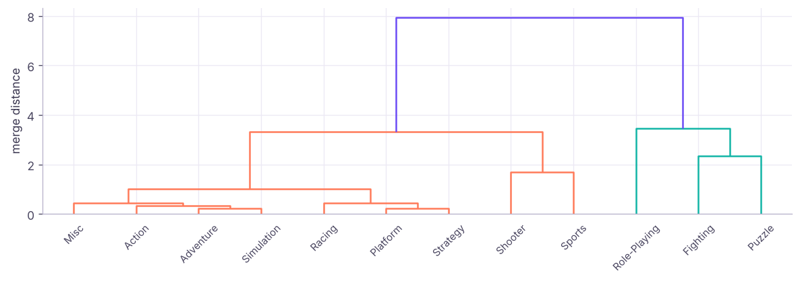
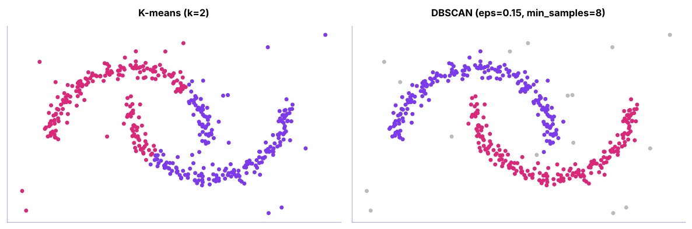
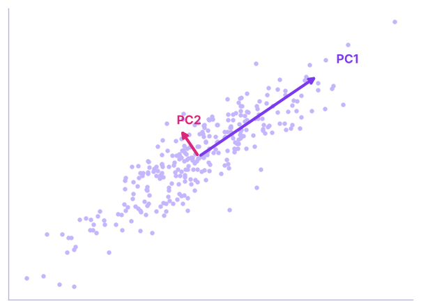
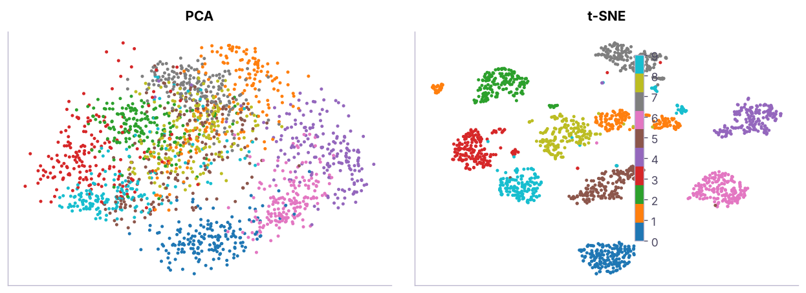

Clustering II and Dimensionality Reduction: Hierarchical, DBSCAN, Gaussian Mixtures, PCA, t-SNE and UMAP
Go beyond K-means. Agglomerative hierarchical clustering with dendrograms and linkage choices, density-based DBSCAN for irregular shapes and outliers, Gaussian mixture models with soft assignments, and dimensionality reduction with PCA (explained variance, loadings, compression), plus t-SNE and UMAP for visualisation, applied to video-game sales and HR data.
- Build and read a dendrogram and choose a linkage method
- Use DBSCAN to find irregular clusters and noise points, and tune eps and min_samples
- Fit Gaussian mixture models and use soft cluster probabilities and BIC
- Apply PCA, read explained variance and loadings, and use PCA before modelling
- Know when to use t-SNE or UMAP and their pitfalls
Hierarchical clustering
Agglomerative clustering starts with every point as its own cluster and repeatedly merges the two closest clusters. The full merge history is a tree, the dendrogram: cut it at a height to get clusters, with no need to fix k in advance.
import pandas as pd, numpy as np, matplotlib.pyplot as plt
pd.set_option("display.width", 160); pd.set_option("display.max_columns", 20)
vg = pd.read_csv("video_game_sales.csv")
pub = vg.groupby("genre").agg(titles=("name", "nunique"), na=("na_sales", "sum"), eu=("eu_sales", "sum"), jp=("jp_sales", "sum"), other=("other_sales", "sum"), total=("global_sales", "sum"))
shares = pub[["na", "eu", "jp", "other"]].div(pub.total, axis=0).round(3) # regional mix per genre
print(shares.join(pub[["titles", "total"]].round(1)).sort_values("total", ascending=False).head(6))na eu jp other titles total genre Adventure 0.401 0.308 0.153 0.137 186 136.7 Sports 0.430 0.348 0.063 0.160 181 133.8 Action 0.413 0.308 0.145 0.135 174 116.3 Racing 0.389 0.321 0.146 0.144 159 113.6 Strategy 0.395 0.320 0.147 0.138 182 111.5 Simulation 0.400 0.313 0.149 0.138 169 108.4

shares["cluster"] = fcluster(L, t=3, criterion="maxclust")
print(shares.groupby("cluster")[["na", "eu", "jp", "other"]].mean().round(2), "\n", shares.groupby("cluster").apply(lambda g: g.index.tolist(), include_groups=False).to_dict()) na eu jp other
cluster
1 0.41 0.32 0.13 0.14
2 0.32 0.29 0.27 0.11
3 0.28 0.24 0.40 0.08
{1: ['Action', 'Adventure', 'Misc', 'Platform', 'Racing', 'Shooter', 'Simulation', 'Sports', 'Strategy'], 2: ['Fighting', 'Puzzle'], 3: ['Role-Playing']}Three clear groups appear: role-playing games sell about 40% of units in Japan, fighting and puzzle games about 27%, and the other genres are driven by North America and Europe with only 13–15% in Japan. A publisher could use this to plan regional launches and marketing budgets.
| Linkage | Merges clusters with… | Behaviour |
|---|---|---|
| Ward | Smallest increase in within-cluster variance | Compact, similar-size clusters (default choice) |
| Complete | Smallest maximum pairwise distance | Compact clusters, sensitive to outliers |
| Average | Smallest average distance | Balanced |
| Single | Smallest minimum distance | Long "chains"; finds odd shapes but chains noise |
Hierarchical clustering is ideal for small datasets (hundreds to a few thousand items) where the tree itself is informative: product taxonomies, store groupings, gene families. It is O(n²) in memory, so not for millions of rows.
DBSCAN: density-based clusters and noise
DBSCAN groups points that are densely packed (at least min_samples neighbours within distance eps) and labels isolated points as noise (−1). It finds clusters of any shape and does not need k.

from sklearn.neighbors import NearestNeighbors
from sklearn.metrics import silhouette_score
d8 = np.sort(NearestNeighbors(n_neighbors=8).fit(Xm).kneighbors(Xm)[0][:, -1])
print("8th-neighbour distance percentiles (pick eps near the 'knee'):", np.percentile(d8, [50, 80, 90, 95]).round(3))
for eps in (0.08, 0.12, 0.15, 0.25):
lab = DBSCAN(eps=eps, min_samples=8).fit_predict(Xm)
print(f"eps {eps}: clusters {len(set(lab)) - (-1 in lab)} | noise points {(lab == -1).sum()}")8th-neighbour distance percentiles (pick eps near the 'knee'): [0.091 0.116 0.139 0.193] eps 0.08: clusters 25 | noise points 120 eps 0.12: clusters 3 | noise points 24 eps 0.15: clusters 2 | noise points 16 eps 0.25: clusters 1 | noise points 11
Tuning: set min_samples ≈ 2 × number of features (or more for noisy data); choose eps from the "knee" of the sorted k-nearest-neighbour distance plot. DBSCAN struggles when clusters have very different densities (HDBSCAN, available as sklearn.cluster.HDBSCAN, handles that).
Uses: geographic hotspots (delivery addresses, crime), anomaly detection (noise points), sensor data, irregular customer groups.
Gaussian mixture models
A GMM assumes the data come from a mix of k Gaussian (bell-shaped) clusters, which may be elongated and of different sizes. Each point gets a probability of belonging to each cluster (soft clustering).
from sklearn.mixture import GaussianMixture
hr = pd.read_csv("hr_employees.csv")
Xh = StandardScaler().fit_transform(np.c_[hr.age, np.log(hr.monthly_income), hr.years_at_company])
bics = {k: round(GaussianMixture(k, covariance_type="full", random_state=0).fit(Xh).bic(Xh), 1) for k in range(1, 7)}
print("BIC by k (lower is better):", bics)
g = GaussianMixture(min(bics, key=bics.get), covariance_type="full", random_state=0).fit(Xh)
probs = g.predict_proba(Xh)
hr["gmm"] = probs.argmax(1); hr["certainty"] = probs.max(1).round(2)
print(hr.groupby("gmm").agg(n=("age", "size"), age=("age", "median"), income=("monthly_income", "median"), years=("years_at_company", "median"), attrition=("attrition", lambda s: round((s == "Yes").mean(), 3))))
print("share of employees assigned with < 70% certainty:", round((hr.certainty < 0.7).mean(), 3))BIC by k (lower is better): {1: 11991.6, 2: 11322.1, 3: 10937.7, 4: 11010.3, 5: 9212.8, 6: 9231.8}
n age income years attrition
gmm
0 436 35.5 65000.0 4.0 0.271
1 271 34.0 95833.0 1.0 0.273
2 328 34.0 51833.0 0.0 0.320
3 183 25.0 90833.0 5.0 0.246
4 282 38.0 119541.5 8.0 0.167
share of employees assigned with < 70% certainty: 0.075GMMs choose k with BIC/AIC, give uncertainty for borderline points, and are also used for anomaly detection (low likelihood = unusual).
Dimensionality reduction: PCA
Principal component analysis finds new axes (principal components) that are uncorrelated linear combinations of the original features, ordered by how much variance they explain. Keeping the first few compresses the data with minimal information loss.

num = hr[["age", "years_at_company", "monthly_income", "job_satisfaction", "distance_from_home_km", "performance_rating"]].assign(monthly_income=np.log(hr.monthly_income))
pca = PCA().fit(StandardScaler().fit_transform(num))
ev = pd.Series(pca.explained_variance_ratio_, index=[f"PC{i + 1}" for i in range(len(num.columns))])
print("explained variance:", ev.round(3).to_dict(), "| cumulative:", ev.cumsum().round(3).tolist())
load = pd.DataFrame(pca.components_[:3].T, index=num.columns, columns=["PC1", "PC2", "PC3"]).round(2)
print(load)explained variance: {'PC1': 0.286, 'PC2': 0.172, 'PC3': 0.167, 'PC4': 0.164, 'PC5': 0.152, 'PC6': 0.059} | cumulative: [0.286, 0.458, 0.625, 0.789, 0.941, 1.0]
PC1 PC2 PC3
age 0.29 -0.34 0.28
years_at_company 0.68 0.08 0.04
monthly_income 0.66 0.06 -0.03
job_satisfaction 0.04 0.76 0.17
distance_from_home_km -0.11 -0.00 0.94
performance_rating -0.04 0.54 -0.06Reading loadings: PC1 loads heavily on years at company and income (and partly age), so it is a "seniority" axis. Later components capture what is left (satisfaction, distance, rating), which are nearly uncorrelated with each other, so each needs its own component.
from sklearn.datasets import load_digits
from sklearn.linear_model import LogisticRegression
from sklearn.pipeline import make_pipeline
from sklearn.model_selection import cross_val_score
digits = load_digits()
p = PCA().fit(digits.data); k95 = int(np.searchsorted(np.cumsum(p.explained_variance_ratio_), 0.95) + 1)
print(f"digits: {digits.data.shape[1]} pixel features → {k95} components keep 95% of the variance")
for n in (5, 15, k95, 64):
s = cross_val_score(make_pipeline(StandardScaler(), PCA(n), LogisticRegression(max_iter=3000)), digits.data, digits.target, cv=5).mean()
print(f" {n:2d} components → logistic regression accuracy {s:.3f}")digits: 64 pixel features → 29 components keep 95% of the variance 5 components → logistic regression accuracy 0.771 15 components → logistic regression accuracy 0.892 29 components → logistic regression accuracy 0.905 64 components → logistic regression accuracy 0.920
| PCA is useful for | Caution |
|---|---|
| Compressing many correlated features | Scale features first |
| Removing multicollinearity before linear models | Components are harder to explain |
| Visualising high-dimensional data in 2-D | Linear only; captures variance, not class separation |
| Speeding up distance-based models | Fit PCA on training data only (inside the pipeline) |
t-SNE and UMAP for visualisation
t-SNE and UMAP are non-linear methods that place similar points close together in 2-D. They make beautiful maps of embeddings, images and text.

Pitfalls: distances between far-apart groups and cluster sizes in t-SNE plots are not meaningful; results change with perplexity and random seed; do not cluster on t-SNE output. UMAP (pip install umap-learn) is faster and preserves more global structure. Both are mainly for looking, not for features in production models.
Choosing a method
| Data / goal | Method |
|---|---|
| Numeric, roughly round clusters, large n | K-means (MiniBatchKMeans for very large) |
| Small n, want a hierarchy | Agglomerative + dendrogram |
| Odd shapes, outliers, unknown k | DBSCAN / HDBSCAN |
| Overlapping, elliptical clusters, need probabilities | Gaussian mixture |
| Mixed numeric + categorical | K-prototypes, Gower distance + hierarchical |
| Too many correlated features | PCA first |
| Visualise embeddings | UMAP, t-SNE |
Summary
- Agglomerative clustering merges closest clusters; the dendrogram shows structure at every level; Ward linkage is the usual default.
- DBSCAN finds dense regions of any shape and labels noise; tune eps with a k-distance plot.
- Gaussian mixtures give soft, probabilistic clusters of different shapes; choose k with BIC.
- PCA creates uncorrelated components ordered by explained variance; read loadings to name them; fit inside pipelines.
- t-SNE and UMAP are for visualisation; distances and sizes in their plots can mislead.
1. What does a dendrogram show?
2. Which method labels outliers as noise?
3. What does a Gaussian mixture give that K-means does not?
4. PC1 explains 45% of the variance. What does that mean?
5. Why scale features before PCA?
6. Can you trust the distance between two far-apart clusters in a t-SNE plot?
(1) Cluster video-game platforms by regional mix with hierarchical clustering. (2) Run DBSCAN on standardised RFM features from the previous lesson: how many customers are noise? (3) Use PCA to reduce the telecom churn features to 3 components and compare logistic-regression AUC before and after.
Show solution
gen = vg.groupby("platform")[["na_sales", "eu_sales", "jp_sales", "other_sales"]].sum(); gs = gen.div(gen.sum(1), axis=0)
print(dict(zip(gs.index, fcluster(linkage(StandardScaler().fit_transform(gs), "ward"), 3, "maxclust"))))
tx = pd.read_csv("retail_transactions.csv", parse_dates=["invoice_date"]); snap = tx.invoice_date.max() + pd.Timedelta(days=1)
rf = tx.groupby("customer_id").agg(r=("invoice_date", lambda d: (snap - d.max()).days), f=("invoice_no", "nunique"), m=("amount", "sum"))
lab = DBSCAN(eps=0.5, min_samples=8).fit_predict(StandardScaler().fit_transform(np.log1p(rf))); print((lab == -1).sum())Q: K-means vs hierarchical vs DBSCAN? K-means: fast, needs k, round clusters. Hierarchical: no k upfront, a full tree, small data. DBSCAN: arbitrary shapes and noise detection, needs density parameters and struggles with varying densities.
Q: What is PCA and when would you use it? A linear transformation to uncorrelated components ordered by variance; used to compress correlated features, remove multicollinearity, speed up models and visualise data.
Q: How do you interpret principal components? Through their loadings: the weight of each original feature in the component, naming it after the features with the largest absolute weights.
Practise more online
Free, trusted places to test yourself on this topic. Links open the original site in a new tab.